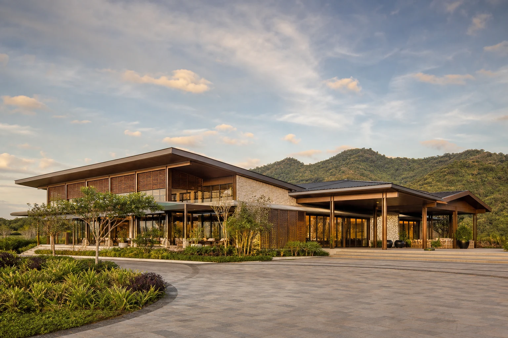
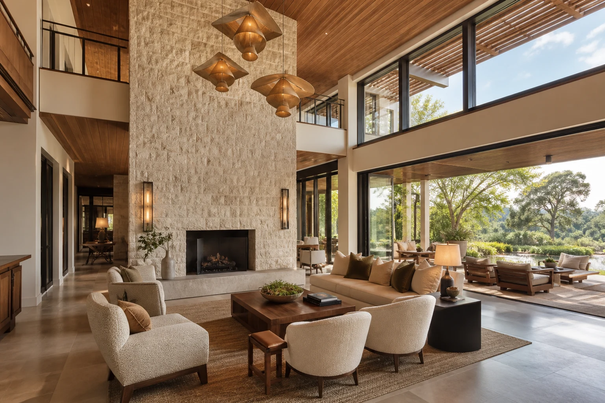
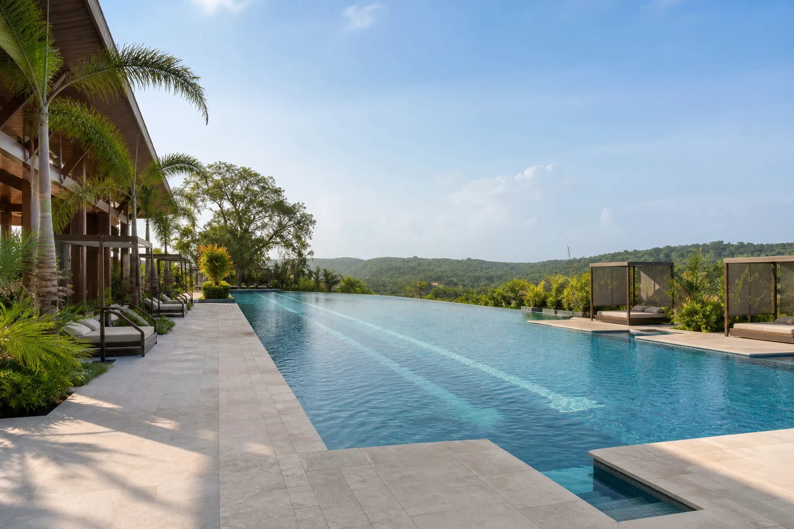
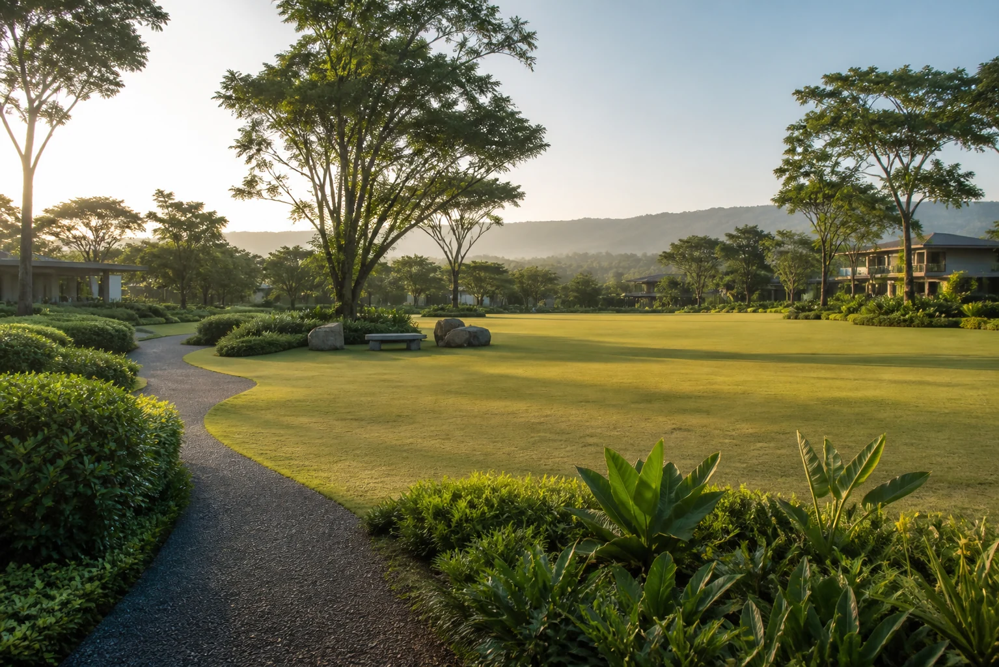
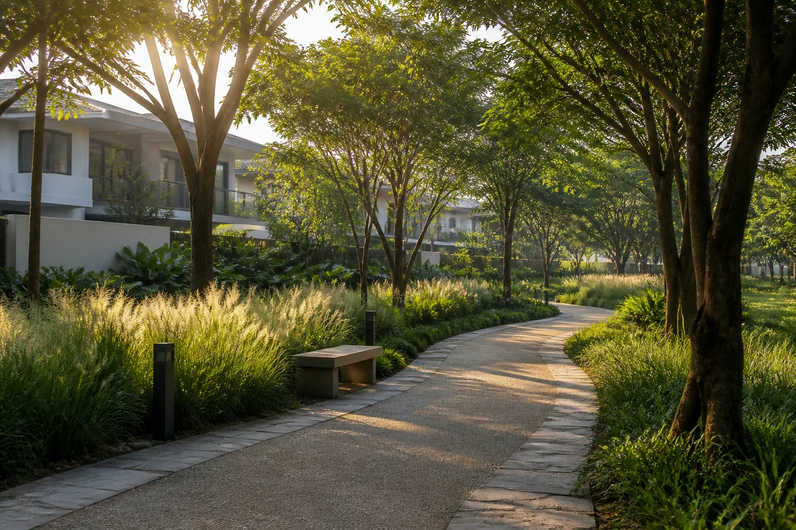
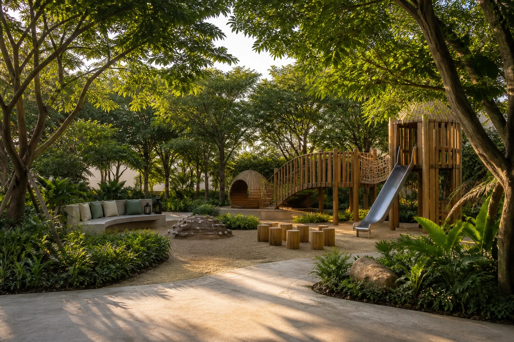

01 · SocialThe Ranch House
A landmark clubhouse with a residents’ lounge, function room, shaded terrace, and garden-facing social spaces.
Club & lounge
Life at Canyon Ranch
Club spaces, pocket parks, and shaded paths turn the neighborhood into a natural extension of home.
A shared landscape
Canyon Ranch is organized around everyday wellbeing: walkable streets, social gathering spaces, active recreation, and restorative green pockets for all ages.
Amenity names and descriptions are design intentions for presentation. Final facilities, programming, and delivery are subject to approved development plans.
Community collection
Each amenity supports a different rhythm—from energetic mornings to long, unhurried evenings with friends.

01 · SocialA landmark clubhouse with a residents’ lounge, function room, shaded terrace, and garden-facing social spaces.
Club & lounge
02 · GatheringA refined extension of home for quiet meetings, easy conversation, and intimate celebrations.
Indoor retreat
03 · WaterA resort-inspired family pool with a lap zone, sun shelf, and shaded deck overlooking the landscape.
Leisure & laps
04 · Open spaceA generous central lawn for picnics, community gatherings, outdoor classes, and relaxed weekends.
Community lawn
05 · MovementA shaded walking and running circuit with rest pockets, discreet lighting, and a gentle landscape rhythm.
Walk & run
06 · FamiliesA nature-led play garden with sculptural timber forms and comfortable shaded seating for families.
Explore & growThe space between
Calm traffic, considered landscaping, and human-scaled frontages create a neighborhood that welcomes a walk.
Wellbeing by design
Wellness at Canyon Ranch is less about a schedule and more about having good choices close at hand.
Experience the community
Visit the setting, explore the home collection, and see how the community comes together.